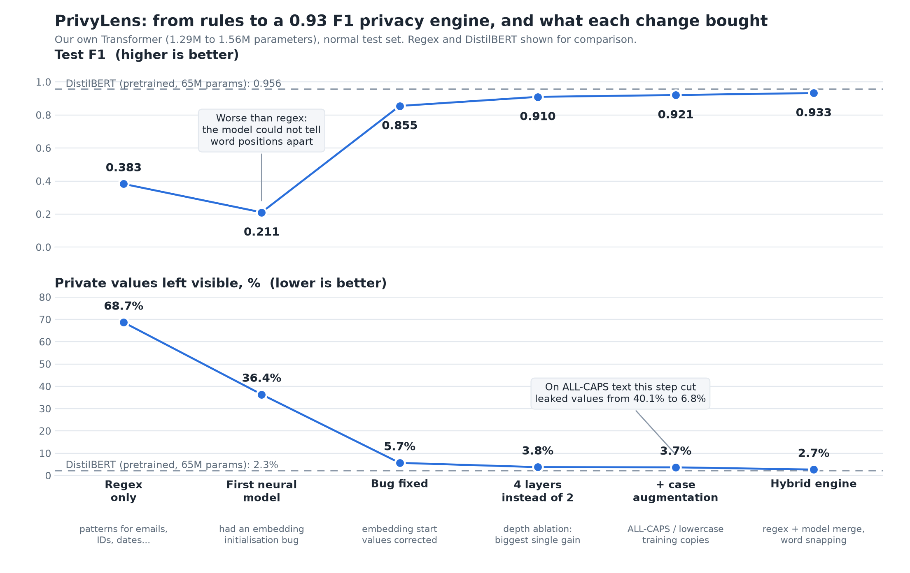

Send the report to at .
PrivyLens hides personal details in text before it leaves your browser. Click a black bar to see what it covers. The production engine leaves 2.7% of private values visible on held-out data, and 5.4% on sentence shapes it never trained on.
How the engine was chosen
A regex pass catches fixed formats (email, URL, IP, PAN). A small neural tagger, 1.56M parameters and 5.5 MB in the browser, catches names and places. Results use exact-match spans. Leaked means private text left visible, so lower is better.
| Model | Size | F1 test | F1 unseen | Leaked on unseen |
|---|---|---|---|---|
| Regex only | none | 0.383 | 0.653 | 51.5% |
| Tagger, 2 layers | 1.29M | 0.855 | 0.718 | 15.4% |
| Tagger, 4 layers + case augmentation | 1.56M | 0.921 | 0.787 | 7.7% |
| Hybrid engine (shipped) | 1.56M | 0.933 | 0.879 | 5.4% |
| DistilBERT (reference) | 65.2M | 0.956 | 0.942 | 0.4% |
DistilBERT is 40 times larger and about 260 MB. The shipped engine gives up a few points of accuracy to run inside the page.

Tagging beat generating
We also trained a model that writes the cleaned text directly. Only 23% of its outputs were exactly right. It duplicated words, corrupted ordinary words, copied half of an email instead of hiding it, and broke down on new sentence shapes. A tagger marks spans and cannot alter the text, so it was the safer design.
What changed the numbers
- Depth: 2 to 4 layers added 5.5 F1 points for 20% more parameters. 4 to 6 added 1.2 more, so we stopped at 4.
- Position encoding: learned positions matched fixed ones on familiar templates (0.865 vs 0.855) but dropped to 0.618 vs 0.718 on unseen ones.
- Vocabulary: 4k words matched 8k with 40% fewer parameters. 16k was worse.
- ALL-CAPS names: a real user's ALL-CAPS name went undetected. Adding upper and lower case copies of the training data cut visible text on such input from 40.1% to 6.8%.
- Whole words: widening matches to full words raised hybrid F1 from 0.862 to 0.904. Half-word fragments were a large share of errors.
Ablations are single runs. The unseen set has 595 rows from 5 templates, so trust the trends, not the decimals.
New ID formats from one example
Companies use their own employee ID formats. We tested 15 unseen companies, giving each one example (K=1) of its ID format.
| Method | F1 | Missed IDs | False redaction |
|---|---|---|---|
| Existing tagger, no examples | 0.454 | 27.6% | 9.9% |
| Fine-tune | 0.747 | 36.4% | 0.0% |
| Few-shot, shape + context | 0.957 | 5.2% | 0.4% |
| Regex built from the examples | 0.989 | 0.0% | 0.2% |
The plain regex built from the examples wins here. Few-shot matching is the closest learned method, and fine-tuning needs about 10 examples to catch up.
Where it still fails
- Lowercase place names stay visible, so mumbai leaks.
- Common words are sometimes hidden: Mail me at becomes [PERSON_1] me. This over-redacts but does not leak.
- Headings in PDFs (Microsoft, Coursera) are mistaken for names.
--keepand--hidework around it. - Scanned PDFs have no text layer, and PrivyLens warns that nothing was redacted.
- Scores on organizations, PAN and URLs partly reflect template familiarity. Use the unseen-template column as the honest number.